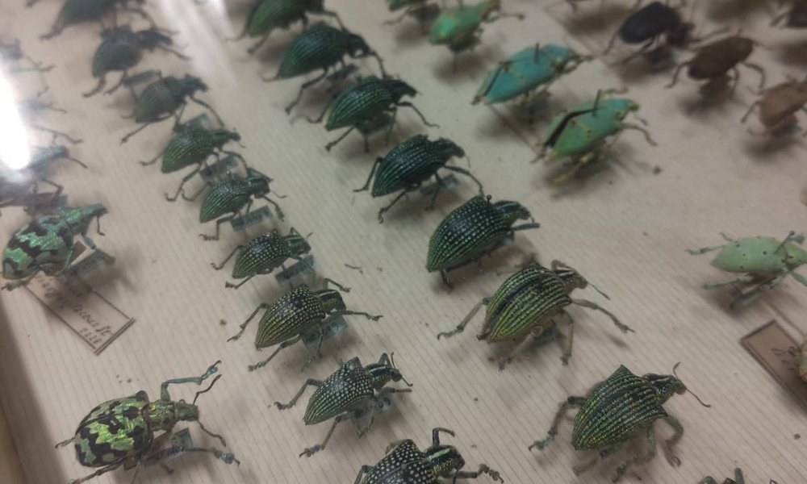
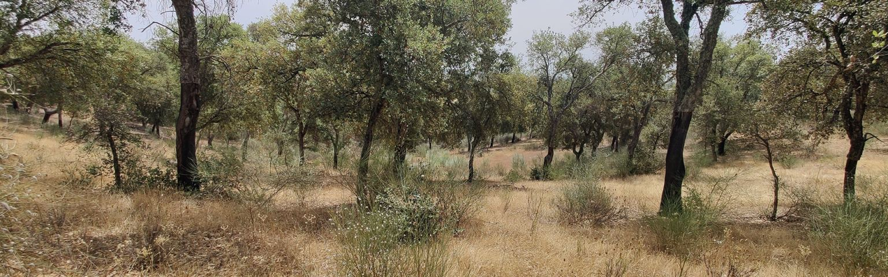

Four MSc thesis projects open this year at the Environmental Genomics Lab (EnGeL), Centre for Functional Ecology, University of Coimbra. Each one combines real research questions with hands-on training in the lab, at the computer or in the collections.
Video: Sandra Simões
01
Otter genomes across Iberia
Population genetics and biogeography of the Eurasian otter (Lutra lutra) in the Iberian Peninsula, using high-resolution genomic approaches including whole-genome sequencing. A key objective is to better understand population structure and historical colonisation patterns across Iberia.
whole-genome sequencing · population genomics · biogeography

Photo: Luísa Fraga
02
Reviving a 19th-century beetle collection
Help bring a forgotten 19th-century Brazilian beetle collection (Paulino de Oliveira, Museu da Ciência da Universidade de Coimbra) back to life by inventorying and digitising its Cerambycidae (longhorn beetles), Tenebrionidae (darkling beetles) or Lucanidae (stag beetles).
Work with a variety of datasets, from the lab to the field, to study how improving soil health helps landscapes cope with hydrological extremes such as drought and fire. Linked to the HidroDataCube4EU project; field sampling takes place in 2027, so most of the thesis work falls in the second MSc year.
The topic is deliberately broad: come and talk to us, and we will shape it together.
soil health · drought and fire · lab and field data

Photo: Luís Cunha
04
Are landscape edges richer?
DNA metabarcoding of the ITS2 and rbcL markers on bulk plant material to compare plant diversity at landscape edges and within landscape interiors across Europe, exploring whether edges support different or richer plant communities. Part of the EESE project (EFSA).